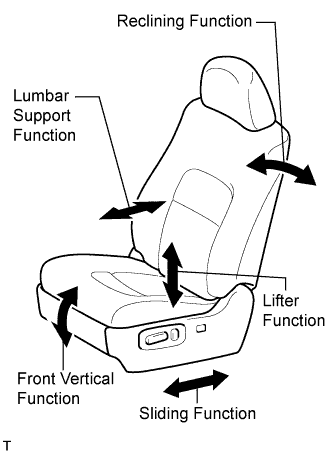

FRONT POWER SEAT CONTROL SYSTEM (w/ Seat Position Memory System) > OPERATION CHECK |
| CHECK POWER SEAT FUNCTION |
 |
Check the basic functions.
Operate the power seat switches and check to make sure each seat function works:
| CHECK POWER SEAT MOTOR ASSEMBLY (SLIDING, FRONT VERTICAL, LIFTER, AND RECLINING FUNCTIONS) |
Check the PTC operation inside the power seat motor.
Choose a power seat function. Operate the power seat switch and move the seat to the farthest possible position in one direction. Keep the seat in that position for approximately 60 seconds.
Operate the power seat switch again and continue to try to move the seat in the same direction as in the previous step. Measure the time until the current is shut off (motor operation sound will stop).
After the current is shut off, release the power seat switch and wait for approximately 60 seconds.
Operate the same power seat switch and move the seat in the opposite direction. Check that the motor operates.
| CHECK LUMBAR SUPPORT ADJUSTER ASSEMBLY |
Check the PTC operation inside the power seat motor.
Operate the lumbar support switch and move the lumbar support to either the foremost or rearmost position. Keep the seat in that position for approximately 60 seconds.
Operate the lumbar support switch again and continue to try to move the lumbar support in the same direction as in the previous step. Measure the time until the current is shut off (motor operation sound will stop).
After the current is shut off, release the lumbar support switch and wait for approximately 60 seconds.
Operate the lumbar support switch and move the seat in the opposite direction. Check that the motor operates.
| CHECK MEMORY AND SEAT RESTORING OPERATION |
Turn the engine switch on (IG) and move the shift lever to P.
Move the seat to the foremost and uppermost position using the seat switch.
Check that the buzzer sounds for 0.5 seconds and the seat position is memorized when seat memory switch 1 is pressed while the seat memory SET switch is being pressed.
Move the seat from the foremost and uppermost position using the seat switch.
Check that the buzzer sounds for 0.5 seconds and the seat position is memorized when seat memory switch 2 is pressed while the seat memory SET switch is being pressed.
Move the seat to the rearmost and lowermost position using the seat switch.
Check that the buzzer sounds for 0.5 seconds and the seat position is memorized when seat memory switch 3 is pressed while the seat memory SET switch is being pressed.
Check that the buzzer sounds for 0.1 seconds and the seat automatically moves to the foremost and uppermost position (memorized position) when seat memory switch 1 of the seat memory switch is pressed.
Check that the buzzer sounds for 0.1 seconds and the seat automatically moves out of the foremost and uppermost position (memorized position) when seat memory switch 2 of the seat memory switch is pressed.
Check that the buzzer sounds for 0.1 seconds and the seat automatically moves to the rearmost and lowermost position (memorized position) when seat memory switch 3 of the seat memory switch is pressed.
After the engine switch is turned off and the driver side door is opened, check that the buzzer sounds for 0.1 seconds and the seat automatically moves to the memorized position when seat memory switch 1, seat memory switch 2 or seat memory switch 3 is pressed within 30 seconds.
Check that the following procedures clear the memorized seat positions of seat memory switch 1, seat memory switch 2 or seat memory switch 3: slide the seat fully forward or rearward; hold seat memory switch 1, seat memory switch 2 or seat memory switch 3; disconnect the cable from the negative (-) battery terminal; release seat memory switch 1, seat memory switch 2, or seat memory switch 3; and wait for 3 minutes.
| CHECK MEMORY CALL FUNCTION |
Automatic memory call function (automatic wireless memory call function)
With a transmitter key recognition code registered:
Perform a wireless door unlock operation and check that opening the driver side door causes: 1) the buzzer to sound for 0.1 seconds, and 2) the front seat, the steering wheel (tilt and telescopic), and outer mirror (RH and LH) to move automatically to the stored positions.
Memory registration (transmitter key recognition code registration)
With the engine switch off and the driver side door closed, press and hold seat memory switch 1, seat memory switch 2 or seat memory switch 3. The front power seat switch (position control ECU) will enter transmitter key recognition code registration mode to allow a key to be linked to a seat memory position.
When the transmitter lock or unlock switch is pressed, check that the buzzer of the front power seat switch (position control ECU) sounds once (0.5 seconds).
Memory deletion (transmitter key recognition code memory deletion)
With the engine switch off and the driver side door closed, press and hold SET switch. The front power seat switch (position control ECU) will enter transmitter key recognition code deletion mode.
When the transmitter lock or unlock switch is pressed, check that the buzzer of the front power seat switch (position control ECU) sounds twice (0.1 seconds each time).
| MEMORY CALL EMERGENCY STOP FUNCTION |
While a memory call function is operating, check that performing one of the following will stop the memory call operation: 1) press the seat memory SET switch, seat memory switch 1, seat memory switch 2 or seat memory switch 3, or 2) press the front power seat switch (position control ECU).